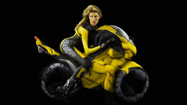

2012-11-18T21:41:13Z
Anomalous Motion Optical Illusion
Anomalous Motion Optical Illusion
Sometimes when I’m forced to repeat myself (as it happens there is only a limited number of illusory effects and patterns out there), at least I try to wait before I find the next best thing. As our “Seemingly Animated” category is among the most popular ones, it wasn’t easy to find an illusion that [...]
Sometimes when I’m forced to repeat myself (as it happens there is only a limited number of illusory effects and patterns out there), at least I try to wait before I find the next best thing. As our “Seemingly Animated” category is among the most popular ones, it wasn’t easy to find an illusion that could match or even beat our previous champ. Yet I think I have managed to do this with today’s “Anomalous Motion” illusion. What do you think of it? Credit goes to G. Sarcone, the author who created this.
2012-11-14T17:46:47Z
Appetising Love Optical Illusion
Appetising Love Optical Illusion
I’m perfectly aware most of you would love to see entertaining and quality stuff posted more often. I keep struggling to maintain quality, which would be hard to accomplish if I’d concentrate solely on quantity. In plain words, it would be much easier for me to post repetitive stuff as well as some lower quality [...]
I’m perfectly aware most of you would love to see entertaining and quality stuff posted more often. I keep struggling to maintain quality, which would be hard to accomplish if I’d concentrate solely on quantity. In plain words, it would be much easier for me to post repetitive stuff as well as some lower quality illusions to maintain regularity, but from my experience following the easier route rarely brings better results. New and refreshing stuff is hard to find whole by myself. This is where I also depend on your quality content submissions and discoveries. So don’t be a stranger! There’s a submit link right below in the footer, where it always stood. Oh, and don’t worry – I’m still fully dedicated to this blog and my dearest community! Here’s an illusion I found most appropriate for today’s post :D
2012-11-08T13:08:40Z
Magnifying Glass Optical Illusion
Magnifying Glass Optical Illusion
Apart from seeing the missing sections of these 4 dark disks as the sides of the square (some will even perceive the square as brighter than its surroundings), as well as perceiving the vague contour lines of a square that doesn’t actually exist, this picture holds another great optical illusion. When the brain sees an [...]
Apart from seeing the missing sections of these 4 dark disks as the sides of the square (some will even perceive the square as brighter than its surroundings), as well as perceiving the vague contour lines of a square that doesn’t actually exist, this picture holds another great optical illusion. When the brain sees an image like this, it interprets depth relationships to perceive the square as set on top of black disks – as a result, the inside of the square is perceived as being closer to your eyes than its surroundings, ultimately creating visual illusion that makes you think the area within the square is enlarged! How about that? This non-existent square becomes a magnifier magnifying the text behind it. This specially works for spacings above and below each word inside the rect. See it? More similar interactive examples can be found in this Mind Lab presentation. Enjoy!
2012-11-02T17:19:14Z
There’s an Owl in My Coffee!
There’s an Owl in My Coffee!
Imagine waking up, doing your morning hygiene, and while still being groggy going after your first morning cup of coffee. Just as you prepare to dunk your face right into the cup, going after that first morning zip – you see this! Whoaaa! I guess it would be the last thing you expected… even though there [...]
Imagine waking up, doing your morning hygiene, and while still being groggy going after your first morning cup of coffee. Just as you prepare to dunk your face right into the cup, going after that first morning zip – you see this! Whoaaa! I guess it would be the last thing you expected… even though there is some kind of connection. We’ve already seen coffee-bean owls before, but this one’s a first! I’m not exactly sure how the artist managed to pull it off, so if any of you could add more background info, feel free to do so!
2012-10-27T08:08:51Z
Adorable Animated Tessellation
Adorable Animated Tessellation
Here’s a very fun animated tessellation picturing birds and cats. Animation truly brings a new dimension to these kind of pictures that use repetition of shapes with no overlaps and no gaps – it additionally helps you see both variations of the image, no matter whether you originally recognised the empty space containing cat shapes, [...]
Here’s a very fun animated tessellation picturing birds and cats. Animation truly brings a new dimension to these kind of pictures that use repetition of shapes with no overlaps and no gaps – it additionally helps you see both variations of the image, no matter whether you originally recognised the empty space containing cat shapes, white space containing birds, or both!
Looking forward to hear what you think of this? I never saw tessellations coming to life before. Perhaps once, when I think about it. Think something similar was featured in the “Escher’s working space” video we featured few months ago. Have to check it again just to make sure…
2012-10-22T17:47:47Z
Car Built With Painted Human Bodies
Car Built With Painted Human Bodies
Just like Trina and Ryan, who body-painted those hot motorcycles last week, Emma Hack came up with something even more peculiar! She imagined a car that had been involved in a small crash, then built it by painting and positioning 17 naked men and women down to the smallest detail. Recreating a “perfect car” perhaps wash’t [...]
Just like Trina and Ryan, who body-painted those hot motorcycles last week, Emma Hack came up with something even more peculiar! She imagined a car that had been involved in a small crash, then built it by painting and positioning 17 naked men and women down to the smallest detail. Recreating a “perfect car” perhaps wash’t doable after all, so she had to compromise imagining an after-crash vehicle, but never the less end-results are still amazing! BTW, did you know that Emma was responsible for most of the body-art featured in Gotye’s popular video “Somebody That I Used To Know”?
Artist Emma Hack created a car that had been involved in a small crash from 17 naked models
2012-10-18T21:26:42Z
Damsels in The Night Illusion
Damsels in The Night Illusion
I’m a big fan of Robert Gonsalves, and I hope you won’t mind if I share another one of his beautiful transformations. You might make a honest mistake, thinking it’s one of his newer works, but it’s quite opposite in fact. For many years now I wanted to show this painting to you, yet it [...]
I’m a big fan of Robert Gonsalves, and I hope you won’t mind if I share another one of his beautiful transformations. You might make a honest mistake, thinking it’s one of his newer works, but it’s quite opposite in fact. For many years now I wanted to show this painting to you, yet it was impossible to find decent quality version – up until now. Aside from ships (motif this artist uses so often), there is another illusory transformation present. Can you see it? Where does one idea stops, another other begins… How about a hint ;D
2012-10-15T14:49:08Z
Human Motorcycles are HOT!
Human Motorcycles are HOT!
So what do you get if you combine yoga, bodypaint and nude models? “Human Motorcycles” as it appears, at least this was the case with our latest post. Featured art installation is a culmination of collaboration between bodypaint artists Trina Merry and Ryan Berman, where resulting motorcycles will tour with the Progressive International Motorcycle Shows in the [...]
So what do you get if you combine yoga, bodypaint and nude models? “Human Motorcycles” as it appears, at least this was the case with our latest post. Featured art installation is a culmination of collaboration between bodypaint artists Trina Merry and Ryan Berman, where resulting motorcycles will tour with the Progressive International Motorcycle Shows in the US. It took over three days to create all three of the human motorcycles (shown below), more precisely: Ducati sport bike, KTM dirt bike and Harley-Davidson cruiser. Watch the YouTube clip to see behind the scenes footage.

Massage therapists were required to keep the participants limbered up and there was a maximum of two minutes a time each bike could be held in position.
Technically those used in the construction of these “motorcycles” weren’t models, but a combination of dancers, yoga instructors and circus performers who were able to undertake the contortions needed to form the variety of shapes, including wheels, seats, exhaust pipes and handle bars.
Each creation required hours of work with the cruiser listed at 15 hours, the sport bike 18 hours and the dirt bike 13.5 hours with each bike being airbrushed by at least eight people.